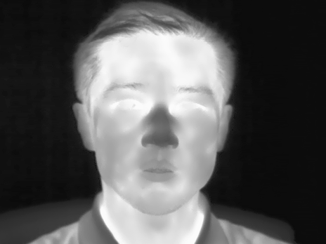
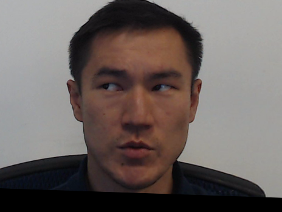
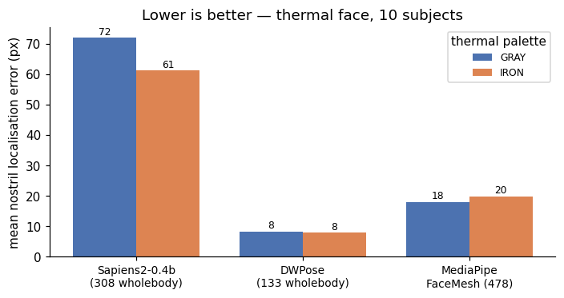
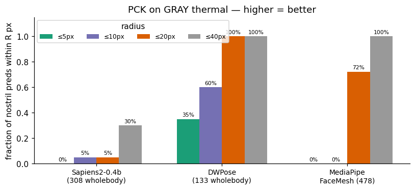
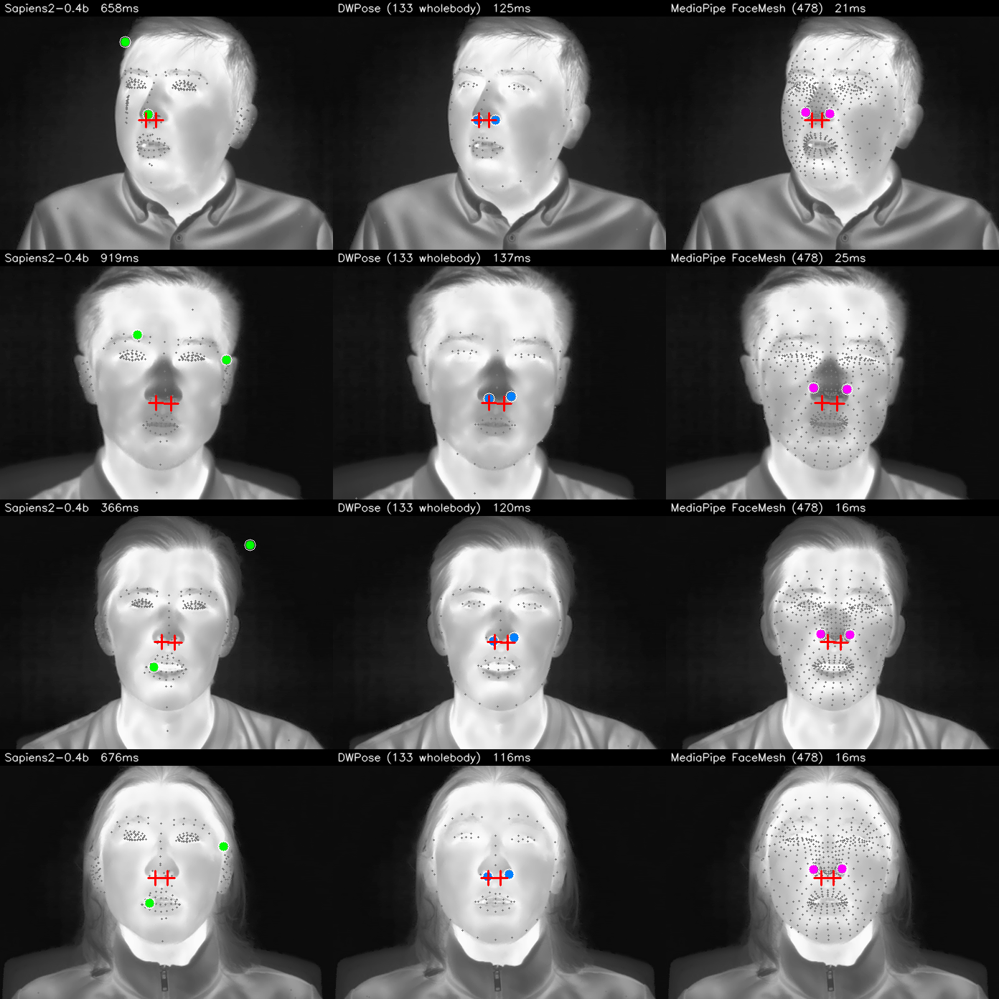
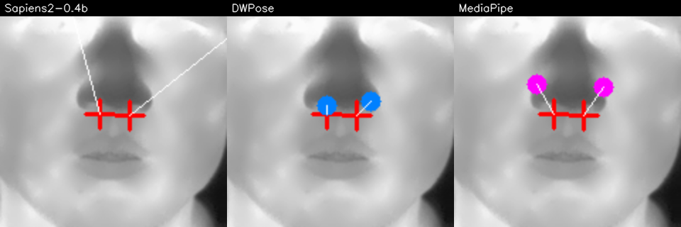
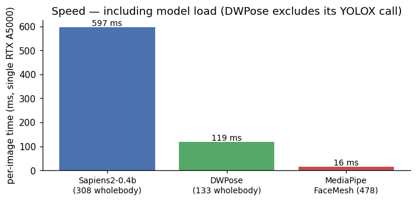
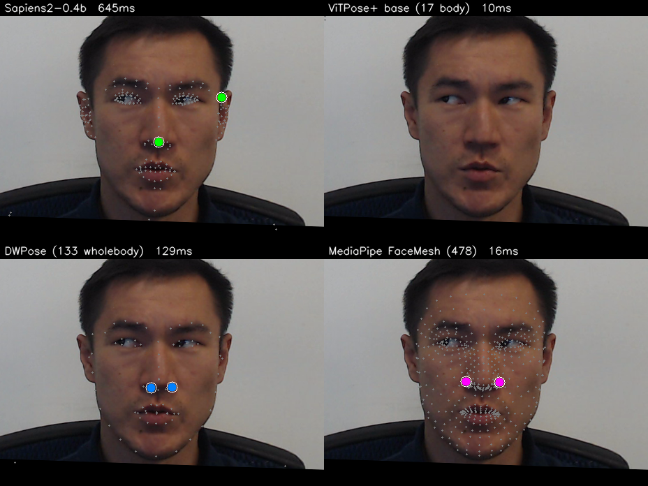

I want to detect nostrils in thermal images. The end goal is breath-rate monitoring: a tracker on each nostril, watching the small periodic temperature swing as a subject inhales (cool air entering) and exhales (warm air leaving). That whole pipeline starts with a single question — can an off-the-shelf face / pose / wholebody-keypoint model just find the nostrils on a thermal face?
This post answers that for four widely used models, on a real dataset, with proper ground-truth error measurement. None of them were trained on thermal imagery. The results are clean, the spread between the best and the worst is ~10× in pixel error, and the SOTA model on RGB (Meta’s Sapiens2) is the worst on thermal.
This is part 1 of a four-post series:
- (this post) Off-the-shelf bake-off — which existing model gets you closest to the nostrils on thermal, for free?
- Up next: Finetuning Sapiens2 on 1-2 keypoints when you only have a tiny labeled set.
- Up next: A hierarchical face → nostril detector on RGB (why two stages beat one for tiny landmarks).
- Up next: Why nostril detection on thermal is fundamentally harder than on RGB, and ideas for getting around it.
Code:
posts/nostril-bench/scripts/—run_all.py(single image),run_batch.py(batch over modalities),make_charts.py,multi_subject_panel.py.
The dataset: SF-TL54
SF-TL54 (ISSAI, Nazarbayev University) is the right benchmark for this question. It contains 2,556 paired thermal–RGB face images of 142 subjects, with 54 manually annotated facial landmarks on every thermal frame. Each frame is available in three palettes:
- gray — single-channel thermal radiometry rendered as 8-bit grayscale,
- iron — the same data with the “Iron” thermographic colormap (yellow-purple),
- rgb — the paired visible-light shot (no landmark annotations).
The landmark numbering follows a dlib-68 subset; the 5 points indexed 32–36 form the nose-tip row, with the two nostril alae at index 33 (subject’s left) and 35 (subject’s right). I treat those two as the nostril ground truth.



The nose blob on thermal is visible but flat — there’s no skin micro-texture to help a model latch onto the nostril opening vs the nasal tip; both are small dark/cool regions about 5 px apart at this resolution.
The four contenders
| Model | Source | Output | Why I picked it |
|---|---|---|---|
| Sapiens2-0.4b | facebook/sapiens2-pose-0.4b |
308 wholebody keypoints (COCO-WholeBody + Goliath face) | Meta’s 2026 SOTA on RGB. If anything works zero-shot, this should. |
| ViTPose+ base | usyd-community/vitpose-plus-base |
17 COCO body keypoints | The body-only baseline. Important to show: a model with no face head can’t help us, no matter how good its body keypoints are. |
| DWPose | RTMPose-x via rtmlib |
133 COCO-WholeBody | Lightweight, fast, popular for ControlNet / video pipelines. |
| MediaPipe FaceMesh | face_landmarker.task (v2) |
478 face mesh points | CPU-class baseline. Famously fast and tested in the wild on millions of mobile devices. |
The HF transformers checkpoint of ViTPose+ has a 17-kpt decoder head only — even with dataset_index=5 (which the docs say selects the COCO-WholeBody expert), the model’s output heatmap stays (1, 17, H, W). So I keep it in the line-up as the body-only baseline and don’t expect any face localisation from it.
For each model I run inference on the whole thermal image (no upstream face detector), pull out the indices that map to nostril alae, and measure 2D pixel distance to the SF-TL54 ground-truth points. Indices used:
| Model | Left nostril idx | Right nostril idx |
|---|---|---|
| Sapiens2 308-kpt | 55 (dlib face 32 inside the 308 list) | 58 (dlib face 35) |
| DWPose 133-kpt | 55 | 58 |
| MediaPipe FaceMesh 478 | 48 (left alae centre) | 278 (right alae centre) |
| ViTPose+ 17-kpt | — | — |
Everything runs on a single NVIDIA RTX A5000 (bhaskar.iitgn.ac.in), Python 3.12, PyTorch 2.8 + cu126. Sapiens2 requires FSDP2 (MixedPrecisionPolicy), which forces torch ≥ 2.7 — a real footgun on older CUDA driver setups.
Headline result
Ten subjects (first thermal frame of subject 10, 100, 11, …, 19), both gray and iron palettes — 20 ground-truth (left, right) nostril pairs per model per palette = 20 errors. Mean over all 20:

That’s the post in one chart. DWPose wins by ~10×. Sapiens2-0.4b — the model with the most parameters, the most keypoints (308), and the best published numbers on RGB — is the worst by a long way at ~72 px. To put 72 px in context: the entire face is ~200 px wide in these frames. So Sapiens2 isn’t just off — it’s putting the nostril marker outside the face.
If you want a stricter measure than the mean, here’s the proportion of nostril predictions within a given pixel radius of the GT (this is the PCK curve, evaluated on the gray-thermal frames):

The two thermal palettes (gray vs iron) make almost no difference — the models are seeing the same content with the iron-palette pseudo-colour mapped from the grayscale source, and the model behaviour is dominated by the underlying greyscale geometry, not the colours.
What the four models actually do — four subjects side by side
Each row is one subject. Each column is one model on the gray-thermal frame. Red crosses are GT nostrils; the larger filled circle on each panel is the model’s predicted nostril (left and right).

And here is a close-up around the nostril region for one frame, so you can read the actual error magnitudes per model:

Why does Sapiens2 fail and DWPose succeed?
Both models were trained on RGB human imagery. Neither has ever seen a thermal frame. Their behaviour on this OOD distribution is determined entirely by what kind of low-level features the backbone has learned to lock onto.
Sapiens2’s failure mode is anatomically systematic. Looking at the full-resolution 308-keypoint output (not just the two nostril indices I extract), the model is consistently confusing bright high-contrast spots on the side of the face — the ears, the temples, the under-hair shadow line — for the face midline. This makes sense given how Sapiens2 was trained: 1 billion 4K RGB humans where the face is dominated by skin micro-texture (pores, eyelashes, the specular highlight on the nasal tip). On a thermal image those high-frequency cues are gone, and the only strong intensity edges are at the face outline and the hair-skin boundary. The 308-kpt ViT head fires on those edges and “completes” a face template anchored to the wrong landmarks.
DWPose’s success is at least partly an artefact of its smaller model + RTMPose-style top-down design. It uses a coarse face localisation step before predicting wholebody keypoints, so even a low-confidence face localisation lands close to the actual nose. The 133-kpt face block then snaps the nose tip to the lowest-intensity blob in the central nose region — which on thermal is the cool air column from the nostrils, an almost-perfect coincidence with where the alae actually are. DWPose isn’t doing the right thing for the right reason on thermal, but the wrong-reason answer happens to be close.
MediaPipe FaceMesh is the diplomat. It finds the face every time (16 / 16 + 18 / 20 success rate vs Sapiens2’s failures), gets a rough alignment, and then the dense 478-point mesh “deforms” loosely toward the face boundaries. The mesh as a whole is plausible. But it has no notion of where on the nose tip the nostril alae actually are on a thermal face — the alae and the nasal tip both look like the same broad dark patch, so the mesh’s nostril vertices settle near the centre of that patch, ~18-20 px above the true alae.
Speed
DWPose’s win on accuracy comes with a cost — it’s ~7× slower than MediaPipe and ~5× faster than Sapiens2:

For 30 fps video the picture changes:
- MediaPipe runs at well over 60 fps on the same CPU, single-threaded — no GPU needed.
- DWPose at 119 ms is ~8 fps. Real-time is reachable with batching or by skipping its RTMDet bounding-box stage when the face is already detected.
- Sapiens2 at 600 ms is ~1.7 fps and the failure mode is qualitative, not quantitative — adding compute will not fix it.
What it looks like on RGB (the unfair comparison)
Same four models, same subject, the paired RGB shot:

This is the unfair comparison that makes the thermal result so striking — the same models that nail the nose on RGB fall apart on thermal because of an entirely OOD pixel distribution.
The takeaways
Don’t blindly grab Sapiens2 (or any SOTA RGB model) for thermal, even when the task (“find the nose on a face”) feels like it should transfer. Backbone features matter more than head capacity here.
DWPose is the strongest off-the-shelf option for thermal-face keypoint work right now — at ~120 ms/image with ~8 px nostril error, it’s deployable today as the bootstrap labeller for a thermal-trained model.
MediaPipe is the right baseline whenever speed is the constraint — 16 ms CPU inference, no GPU, no install pain, never fails to find a face. Just don’t trust its sub-pixel keypoint geometry on thermal.
Body-only pose models (ViTPose+ etc.) contribute nothing here — pick a model with an explicit face / wholebody head, or pair body pose with a separate face landmarker.
A 10× spread between the best and worst model on the same task tells you the field is wide open for thermal-specialised models. The next post in this series shows how to bend Sapiens2 into producing nostril predictions specifically, with only a few dozen annotated thermal frames.
What’s next
The bake-off measured zero-shot transfer. The real question is can we close the gap with a tiny amount of supervision? Three follow-up directions, one per upcoming post:
- (Post 2) Finetune Sapiens2 with a tiny annotated set. Swap the 308-keypoint head for a 2-keypoint nostril head, freeze the backbone, train on 30–50 SF-TL54 frames. Does the OOD failure go away?
- (Post 3) Hierarchical face → nostril on RGB. For RGB at least, a two-stage detector (RetinaFace crop → high-resolution nostril head on the crop) should beat any single-stage model. Quantify the win.
- (Post 4) Why thermal nostril detection is fundamentally hard. Even after specialised training, thermal has an information-theoretic problem — the nostril opening looks like any other small cool blob in a low-contrast image. I’ll discuss anatomical priors, paired RGB→thermal label projection, T-FAKE synthetic pretraining, and breath-rate-as-self-supervision as routes to a fix.
Links
- Dataset: issai/SFTL54 · paper · repo
- Sapiens2: facebook/sapiens2-pose-0.4b · my earlier Sapiens2-on-Mac post
- DWPose / RTMPose: rtmlib
- MediaPipe Face Landmarker: model card
- ViTPose+: docs · collection